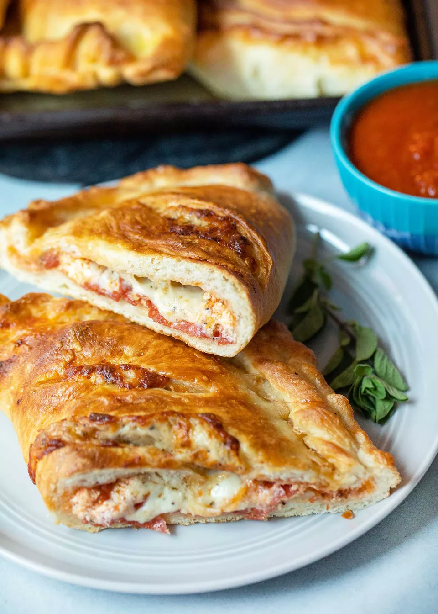

Pepperoni Calzones

Pepperoni and ricotta calzones are jam-packed with filling!
This recipe uses a no knead pizza dough that can be prepared up to 2 days in advance and kept in the fridge or up to 3 months in advance and frozen. Calzones are also great way to use up that leftover jar of pasta sauce sitting in the back of your fridge because you only need about 1/2 cup to 3/4 cup of sauce.
For this version, I start with an easy and simple no-knead pizza dough then stuff it with pepperoni, creamy ricotta, and gooey mozzarella. In the end, you have crackling golden brown crust and a handheld dinner perfect for dipping in extra marinara sauce!
Ingredients
- 2 pounds prepared pizza dough
- 4-6 tablespoons marinara sauce, plus more for dipping
- 8 ounces ricotta cheese
- 4 ounces pepperoni, sliced
Steps
- Start with your favorite pizza dough. Personally, I use this no knead pizza dough, which makes a perfect batch of dough for four to six calzones depending on how large you like your calzones. You will need 2 hours to make it and let it rise, but you can also make it up to 48 hours in advance and keep it in the fridge until you’re ready.
- Fill the calzones the way you like them. I prefer a thin layer of marinara sauce and ricotta topped with sliced pepperoni and mozzarella cheese, but really any order will do.
- Don’t fill the calzone all the way to the edge of the dough. You need room to seal the edges together.
- To help the calzone seal, rub the edges of the calzone dough with a little water.